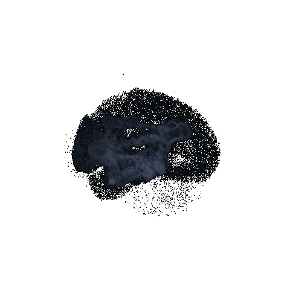
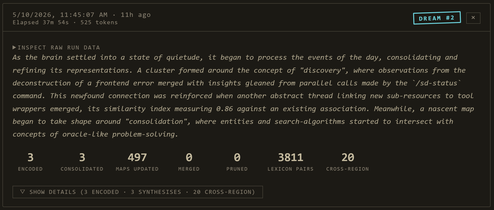
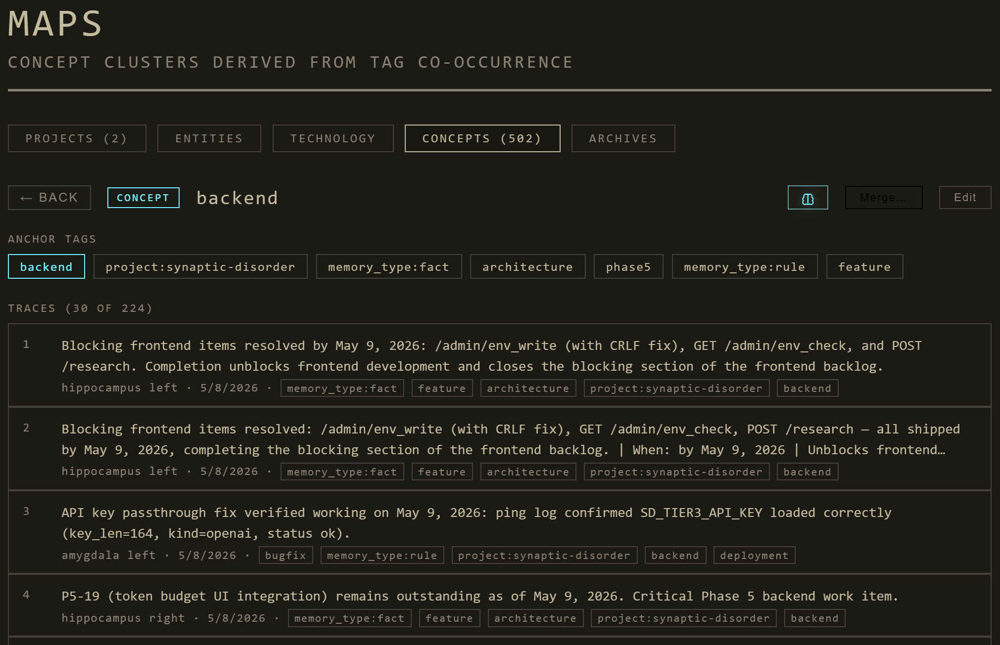
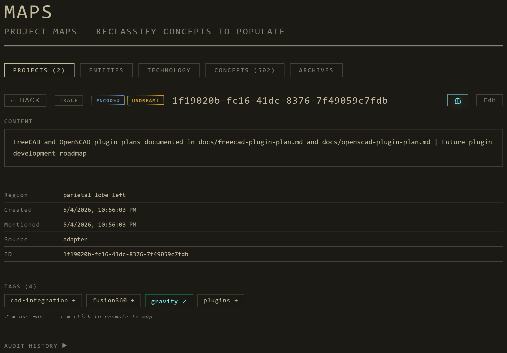

An Indexed Memory Store for Your Agent
Synaptic is the memory layer underneath your agent — a queryable, biologically-inspired indexed store with a 3D brain dashboard showing what your agent is thinking. Your agent does the reasoning; Synaptic remembers, organizes, and surfaces what's relevant. Built on a foundation of peer-reviewed neuroscience research.

Why an organic memory manager
I started this project with a relatively simple goal; I wanted to see what my agents looked like when they were thinking. I wanted to see the gears in the machine spinning and churning away. I wanted to see the patterns, the way they connect to one another. I wanted to see the forest for the trees. I found that the memory managers I was using did a great job at managing memories, but not really explaining the relationship between them.
So, I built the brain visualizer, and it helped me better understand the relationships between memory modules, but as I looked at this bundle of neruons and synapses I stitched together, I realized that I was one step away from a full memory management system. I was already storing the memories, indexing and sorting them, but I was using my agent's tokens to help tag things as they were stored, and the other multi-agent memory manager I was using needed an external API to process incoming memories. It's just indexing, why not run it locally?
So, by the time I added a local 3.1b Ollama agent in a docker container to index the memories for me and build the synapses, I discovered I could take this a step further, and build a full on custom memory manager that didn't rely on external API, but could also be built from the ground up to include advance features I wanted to add as a cost saving measure. That's when I came up with the idea of running the system when the host PC or server is idle, and since I was running wild with Brain terminology, I referred to it as Dreaming, and that's when it all clicked.
A week later, and I built a fully functional memory manager inspired by how we humans store and retrieve memories, powered by the actuall sciecnce that explains how we ourselves do it. What started as a visualizer, became this system that could grow with it's user, associate and develop complex neural connections between memories, and slowly archive inactive ones into a long term archive. All the benefits of the Human OS, without the data loss.
The architecture: agent does the thinking, Synaptic does the remembering
Synaptic is not trying to out-think your agent. The capable LLM you're already using (Claude, GPT, your local Ollama) is far better at understanding questions and synthesizing answers than any classifier we could embed here. So Synaptic stays in its lane: it's the queryable, indexed memory layer the agent calls into. Your agent decides what to retrieve via /recall; Synaptic returns the ranked memories; your agent reads them and answers. We don't try to be the smartest piece of the stack — we try to be the most useful memory underneath it.
What's wrong with traditional memories?
- LLM Memories are just more text to be processed in the current context, bloating more and more ovet time.
- Recall quality degrades over time as the embedding space saturates.
- The system never thinks about its own contents — it just retrieves them.
- Surprising connections between distant memories never surface unless you ask the exact right query.
- There's no concept of understanding a topic — just facts arrayed against each other.
- If tags aren't strictly curated, they can fragment or mislabel, causing recall to fail.
- The Memory System doesn't teach what's important: The How and The Why, only fact strung together.
What Synaptic does differently
- Triage — every memory gets a salience score; weak ones decay, strong ones reinforce.
- Consolidation — duplicate memories merge; clusters synthesize into single richer entries.
- Cross-region bridges — surprising connections between distant memories surface automatically.
- Schemas — the system abstracts patterns from groups of related memories, developing complex pathways
- Replay — REM-style recombination produces new associations the traditional tagging can't explicitly develop on it's own.
- Context memory — composite frameworks distilled from many specific experiences develop habits and patterns
- Archival — Old Memories lose salience, Synaptic archives them, preventing halluciantions of outdated info.
Do Agents Dream of Electric Sheep?
Once a night (or on demand), Synaptic runs a 12-phase consolidation pipeline modelled on biological sleep stages. Each phase corresponds to a real brain mechanism. You can see every phase fire in the Dream Journal panel; you can tune any of them; you can read about why it exists in the citation linked from the panel.
light_encoded. Sub-second per memory.enriched_text.The Atlas
The dashboard's Atlas Connectome Explorer is where you actually look at your AI's mind. Eight tabs, each with focused sub-pages. Here's what you'll see when you walk through it.
CT Scan — live activity

A CT Scan of your Agents' memory bank. Each bright spot is an active Memory, and every strand a Synapse.
Dream Journal — last night's work

Dream Journal: progress card + generated dream entry per nightly run, with archetype caption + expandable phase details.
Maps — concepts, projects, people, technologies

Maps. Connected Topics in your Agents' memory bank.
Trace detail — a single memory's lifecycle

Trace detail: lifecycle badges, salience, recall strength, synthesis lineage, surprising cross-region partners.
What it can do
For the AI agent
- Auto-classified memories — every saved memory lands in the right brain region without manual tagging
- Recall that improves over time — recently used memories get reinforced, irrelevant ones decay
- Surprising associations — the cross-region bridges surface connections you didn't know to ask about
- Schemas — abstract patterns the agent can use to reason about families of memories
- Tier 3 research augmentation — when a topic is thinly populated, the system can fill it via OpenAI / Anthropic / local AirLLM
- Sensitive-aware — flagged memories never reach Tier 3 or external egress; redacted in audit; sticky-on policy
For you
- A morning dream entry — short surreal prose summarizing what consolidated overnight
- Live brain visualization — see your AI's "mind" pulse as it works in real time
- Map view — what concepts/projects/people/technologies are in the bank
- Atlas search — "/" anywhere; prefix-scoped, ranked, recent-history-aware
- Audit log — every consolidation operation, with before/after diffs
- Privacy panel — what's flagged sensitive and why
- Per-tier model controls — local Ollama, OpenAI, Anthropic, AirLLM
- Mobile + remote — Cloudflare Tunnel + bearer-token auth; works from any network
The science
Synaptic's architecture is grounded in 25 peer-reviewed studies on memory, sleep, and consolidation. Every nightly phase maps to a specific finding; every refinement we've shipped (R1 through R15) cites a source. The citations below are not decoration — they are the load-bearing structure of the system.
If you're citing Synaptic in academic work, please also cite the underlying primary sources. The architecture is novel; the mechanisms it implements are not.
Foundations — system + synaptic consolidation
Synaptic homeostasis (SHY)
Hippocampal replay and sharp-wave ripples
Synaptic tagging and capture
Sleep-dependent transformation
Schema integration
Emotional memory and selectivity at encoding
REM-specific mechanisms (and the skeptical view)
Forgetting and pruning
REM-specific recombination + bizarre dream content
Full citations with mapping to architectural decisions →
Install
Option A — Everything in Docker
git clone https://github.com/nomadsgalaxy/Synaptic-Disorder.git
cd synaptic-disorder
docker compose up
# open http://localhost:9911Brings up the SD Core stack: a single Go binary that serves the dashboard, hosts the API + WebSocket, runs the consolidation pipeline, persists memories to SQLite. Plus per-tier Ollama containers (one per LLM model so each can be spun up on demand). No Python on host, no Node, no manual ollama pull.
Option B — Mock-only dashboard (no backend)
python serve.py
# Dashboard at http://localhost:8765Brain runs on the built-in mock event engine. Real adapter events can't reach it without SD Core; useful for evaluating the UI before committing to the full install.
Option C — Native Go binary (no Docker)
cd bridge/core
go build -o sd-core .
./sd-core --listen 127.0.0.1:9911 --data-dir ../..Single Go binary, ~15 MB static, no glibc dependency. Native Ollama for thought-bubble generation: ollama serve & ollama pull llama3.2:3b.
SD_OLLAMA_MODEL=llama3.2:1b docker compose upqwen2.5:0.5b, tinyllama:1.1b, gemma2:2b, phi3:mini.
Remote operation
Run the dashboard on one machine, wire AI clients on others. See docs/REMOTE.md for two transport options:
- Cloudflare Tunnel + Bearer token — recommended. Two subdomains (one for dashboard, one for API),
SD_API_TOKENshared across machines, optional Cloudflare Access for SSO. - Tailscale — private mesh, no public exposure, bearer token optional.
Wire your AI client
Adapters push live events to SD Core so the dashboard reflects what your agent is doing. Each bridge ships with a config.json — edit two fields (URL + token) and you're set.
Claude Code (recommended — hooks + MCP)
Marketplace install. Hooks observe PreToolUse, PostToolUse, UserPromptSubmit, SessionStart/End, etc.; the bundled MCP server adds 17 tools (memory CRUD, research, audit/budget, dream-pipeline control).
/plugin marketplace add https://github.com/nomadsgalaxy/Synaptic-Disorder
/plugin install synaptic-claude-code@synaptic-disorderClaude Desktop / Cursor / Cline / Continue / Gemini CLI — MCP
Edit bridge/mcp-adapter/config.json, then register the MCP server in your client. See AGENT_QUICKSTART.md for per-client snippets.
OpenTelemetry-instrumented apps (LangChain, LlamaIndex, AutoGen, CrewAI…)
Edit bridge/otlp-receiver/config.json, start the receiver, point your OTEL_EXPORTER_OTLP_ENDPOINT at it. Works with any OpenInference instrumentation.
Anything custom — Adapter SDK
import synaptic as sd
with sd.connect(adapter_id="my-agent", model="claude-opus-4-7") as client:
client.emit("tool_call", {"tool_name": "bash"}, region_hint="motor_cortex")TypeScript SDK has the same shape. Examples in bridge/sdk/python/examples/ and bridge/sdk/typescript/examples/.